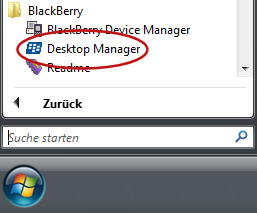
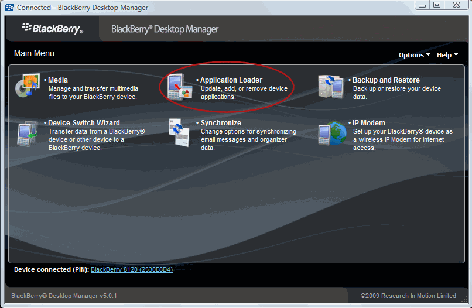
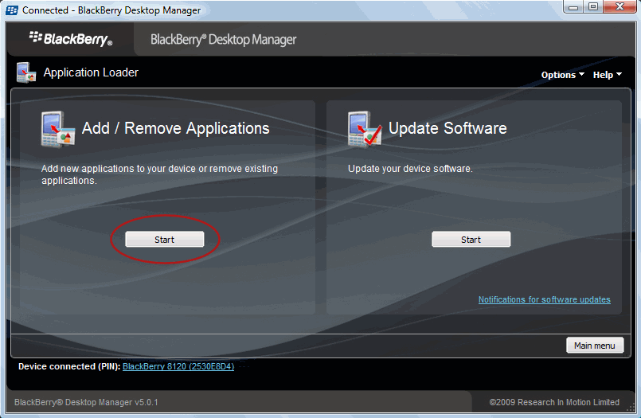
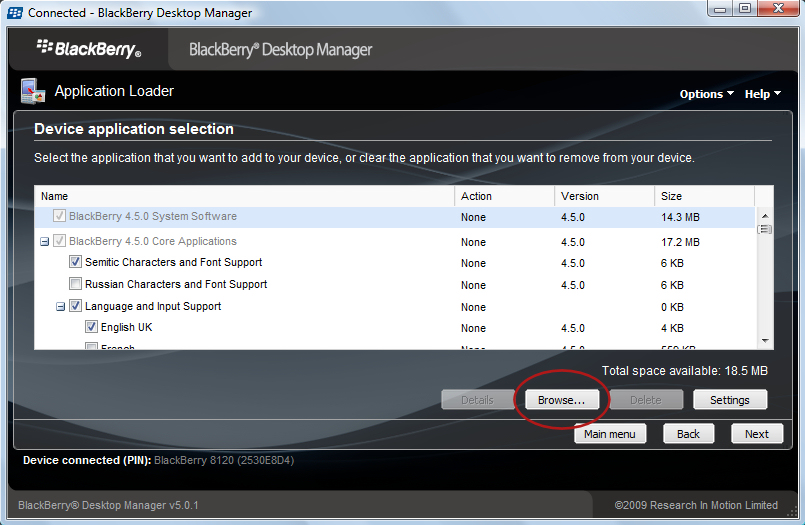
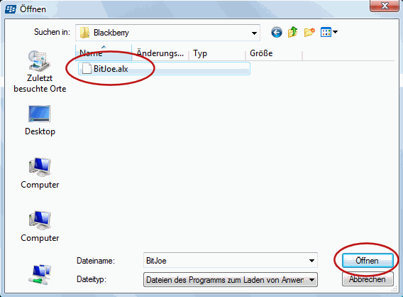
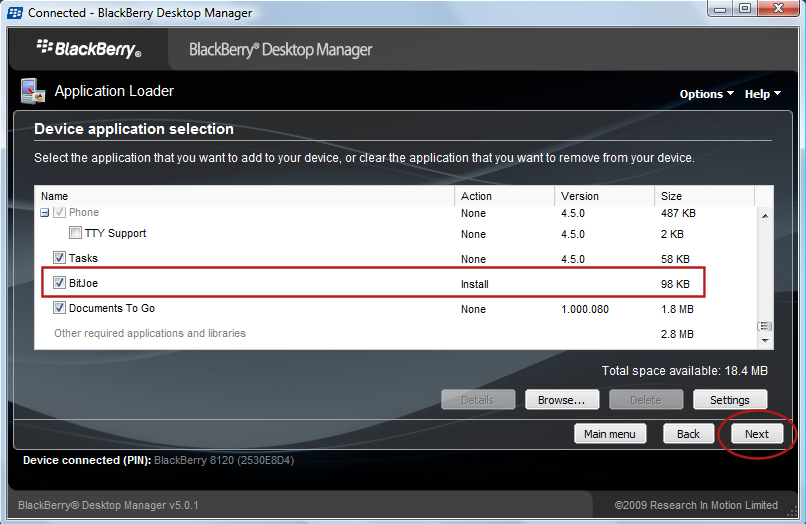
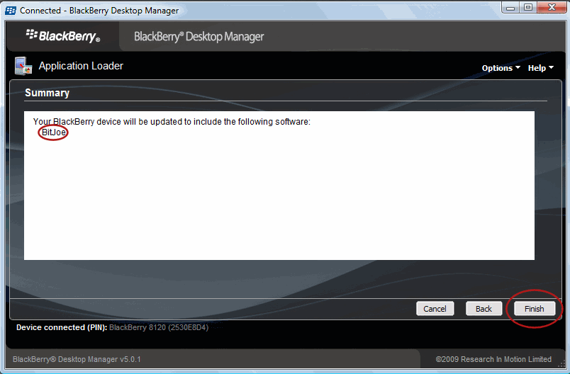

1. Once you downloaded the installation files found in BitJoe.zip, simply extract them by double left-clicking on BitJoe.zip.
2. Transfer the files to your mobile device via USB cable, Bluetooth or storage card.
3. On your mobile device, select BitJoe.jad to install BitJoe.
or
1. visit http://m.bitjoe.de with your mobile browser and click "accept TOS & install BitJoe"
Afterwards you should see BitJoe in your mobile phone menu (in most cases you will find it under Games or Applications).
1. Once you downloaded the installation files found in BitJoe.zip, simply extract them by double left-clicking on BitJoe.zip.
2. You have to install the Blackberry Desktop Software on your PC. Download it here: http://na.blackberry.com/eng/services/desktop/
3. Connect your Blackberry to your PC via USB or Bluetooth.
4. Start the Blackberry "Desktop Manager" on your PC.
5. Choose "Application Loader"

6. Choose " Add / Remove Applications" and click "Start"

7. Click "Bowse"

8. Navigate to the BitJoe Folder you have extracted in step 1 and choose "BitJoe.alx"

9. Make sure that BitJoe is selected and click "Next"

10. click "Finish" and wait until installation is complete

Afterwards you should see BitJoe in your mobile phone menu.Do you have a question? Visit our FAQ
Do you need technical support? Visit our Support Page